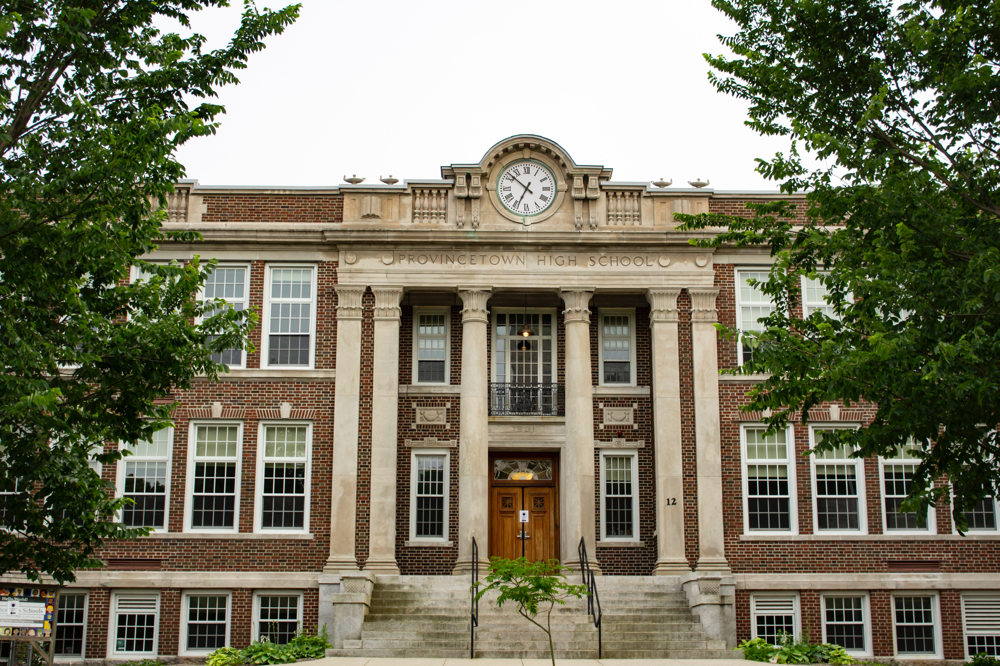

Our Pride
Extra-Curricula
We nurture and develop all that is best in each of our students at Siphiwe Secondary School In sport, as in so many areas of school life, we provide a range of options, giving all learners the chance to discover where their interest in sport is.
Accreditation
Gauteng Department of Education is the premier Gauteng Province Government accreditation body for schools. Siphiwe Secondary School is fully accredited by Gauteng Department of Education GDE 700400892.

School Campus
We emphasise the engagement of learning within a caring, purposeful and stimulating environment where every student is encouraged to succeed. We embrace the language and culture of South Africa to prepare our students for their career life.